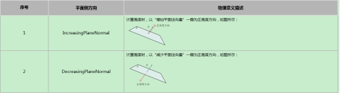

在3D测量中，高度测量工具主要是获取输入点集或深度图像中感兴趣区域内三维空间点到指定基平面的高度距离，并完成高度直方图、最小值、最大值、均值、中值、标准差、低尾部和高尾部等高度信息的统计，帮助用户更加精确的获取高度距离的分布情况。
| 分类 | 参数名称 | 参数描述 |
|---|---|---|
| 属性窗口 | 启用三维点集计算 | 选择“是”，参数链中显示输入三维点集参数，并使用该三维点集进行高度测量。 |
| 平面方向 | 分为两种：增加法向量一侧为正高度方向和减少法向量一侧为正高度方向和。 |
|
| ROI类型 | 待检测区域，分为7种：整幅图像、矩形、仿射矩形、圆形、圆环、椭圆、多边形。 | |
| 启用掩膜 | 是否启用掩膜，选择“是”，显示掩膜个数、掩膜序号、掩膜形状等参数。 | |
| 掩膜个数 | 设置启用的掩膜个数，取值范围为 [1, 99]。 | |
| 掩膜序号 | 当前欲设置的掩膜索引。 | |
| 掩膜类型 | 当前欲设置的掩膜形状，分为6种：矩形、仿射矩形、圆形、圆环、椭圆、多边形。 | |
| 低尾部分数 | 计算低尾部的比例参数，取值范围为 [0,1]，且高低尾部分数之和小于等于1，参考监视窗口低尾部参数。 | |
| 高尾部分数 | 计算高尾部的比例参数，取值范围为 [0,1]，参考监视窗口低尾部参数，且高低尾部分数之和小于等于1，参考监视窗口高尾部参数。 | |
| 标准差系数 | 标准差系数。 | |
| 启用高度范围过滤器 | 选择“是”，则对计算得到的高度数据根据高度范围进行过滤，并显示高度范围下限和高度范围上限参数。 | |
| 高度范围的下限 | 高度范围的下限，且高度下限应小于等于高度上限，根据高度范围对计算得到的高度数据进行过滤。 | |
| 高度范围的上限 | 高度范围的上限，且高度下限应小于等于高度上限，根据高度范围对计算得到的高度数据进行过滤。 | |
| 包含高度范围内的值 | 选择“是”，则包含高度范围内的值，否则为排除高度范围内的值。 | |
| 系数补偿 | 测量结果系数补偿，一般为1，用于补偿成像等系统误差。 | |
| 固定补偿 | 测量结果固定补偿，一般为0，用于补偿成像等系统误差。 | |
| 高度最大值上限 | 取值范围为[-100, 100]，且下限应小于等于上限。 | |
| 高度最大值下限 | 取值范围为[-100, 100]，且下限应小于等于上限。 | |
| 高度最小值上限 | 取值范围为[-100, 100]，且下限应小于等于上限。 | |
| 高度最小值上限 | 取值范围为[-100, 100]，且下限应小于等于上限。 | |
| 高度均值上限 | 取值范围为[-100, 100]，且下限应小于等于上限。 | |
| 高度均值下限 | 取值范围为[-100, 100]，且下限应小于等于上限。 | |
| 高度中值上限 | 取值范围为[-100, 100]，且下限应小于等于上限。 | |
| 高度中值下限 | 取值范围为[-100, 100]，且下限应小于等于上限。 | |
| 图像窗口 | 深度图像 | 显示待检测的深度图像，显示为伪彩色图像。 |
| 检测区域 | 在图像上显示待检测区域。 | |
| 掩膜区域 | 在图像上显示待掩膜区域。 | |
| 数据链 | 深度图像 | 输入待检测的深度图像。 |
| 基平面 | 选择高度测量的基准平面。 | |
| 二维线性变换 | 目标相对于模板的平移、旋转、缩放变换。 | |
| 高级界面 | 无 | 无 |
| 分类 | 参数名称 | 参数描述 |
|---|---|---|
| 监视窗口 | 图像数据 | 图像的长宽和像素大小，以及深度数据参数。 |
| 均值 | 高度数据的平均高度值。 | |
| 中值 | 将高度数据排序后，位于中间位置的高度数据。 | |
| 最小值 | 高度数据中最小高度数值。 | |
| 最大值 | 高度数据中最大高度数值。 | |
| 低尾部 | 使得小于某数值的数据量达到指定比例（低尾部分数）的高度数值。 | |
| 高尾部 | 是的大于某数值的数据量达到指定比例（高尾部分数）的高度数值。 | |
| 标准差 | 即高度数据标准差。 | |
| μ+kσ | 均值+k*标准差，其中k为标准差系数。 | |
| 区域边界框内像素数目 | 感兴趣区域的最小外接矩形内像素（包含无效像素）的数目。 | |
| 关注像素数目 | 感兴趣区域形状内像素（包含无效像素）的数目。 | |
| 可见关注像素数目 | 感兴趣区域形状内有效像素的数目。 | |
| 所用像素数目 | 感兴趣区域内实际用于高度测量的像素数目。 | |
| 执行结果 | 工具执行结果。 | |
| 执行时间 | 工具执行时间。 | |
| 图像窗口 | 输出图像 | 显示检测的深度图像，显示为伪彩色图像。 |
| 直方图GUI | 高度数据直方图 | |
| 数据链 | 同监视窗口参数，供后续工具使用。 |
Step 1 设置是否启用三维点集
选择“是”，参数链中显示输入三维点集参数，并使用该三维点集进行高度测量；选择“否”，参数链中显示输入深度图像，并使用深度图像进行高度测量。
Step 2 设置基平面
基平面的设置其实就是在深度图像上选择一个感兴趣区域以获取三维数据点，然后根据平面方向和拟合方法执行平面拟合。默认情况下，基平面为XOY平面。
Step 3 设置平面侧方向
执行高度计算时，需要确定测量高度的方向；平面侧方向共包含：IncreasingPlaneNormal和DecreasingPlaneNormal两种，其具体物理含义如下表所示。两种平面侧方向得到的高度数值是互为相反数的，因此，最终计算得到的统计信息描述也就不同。

Step 4 设置测量区域及掩膜
为了获取三维空间点数据需要设置测量区域及掩膜，其中，测量区域形状支持圆、椭圆、多边形、矩形、仿射矩形或圆环段等六种设置，掩膜支持任意数量的圆、椭圆、多边形、矩形、仿射矩形和圆环段等六种区域设置；此时，高度测量使用的是测量区域形状内除去掩膜区域的三维空间点数据。
Step 5 设置直方图统计
设置直方图统计主要包括：设置参数与设置高度范围过滤器。设置参数是对低尾部分数、高尾部分数和StdDev系数三个参数进行设置。设置高度范围过滤器主要是对计算得到的高度数据进行过滤，可以指定一个高度范围，并确定高度范围滤波模式是包含高度范围内的值还是排除高度范围内的值。
Step 6 执行测量与输出结果
获取三维空间点数据后，执行测量可以得到高度数据，并完成高度信息的统计，输出高度直方图、最小值、最大值、均值、中值、标准差、低尾部和高尾部等结果，以及像素计数结果。
Step 7 补偿和结果判定
若需要对计算结果进行补偿或者判定的话，可以对系数补偿、固定补偿、判定依据、最大值、最小值进行设置。
无
参见“\Samples\3D\深度图\3D测量工具.gvp”。